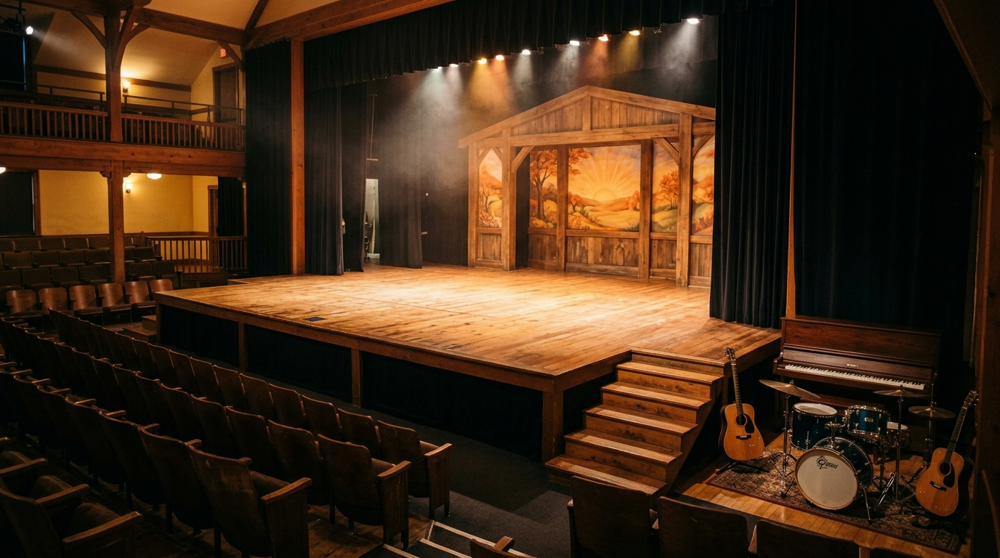
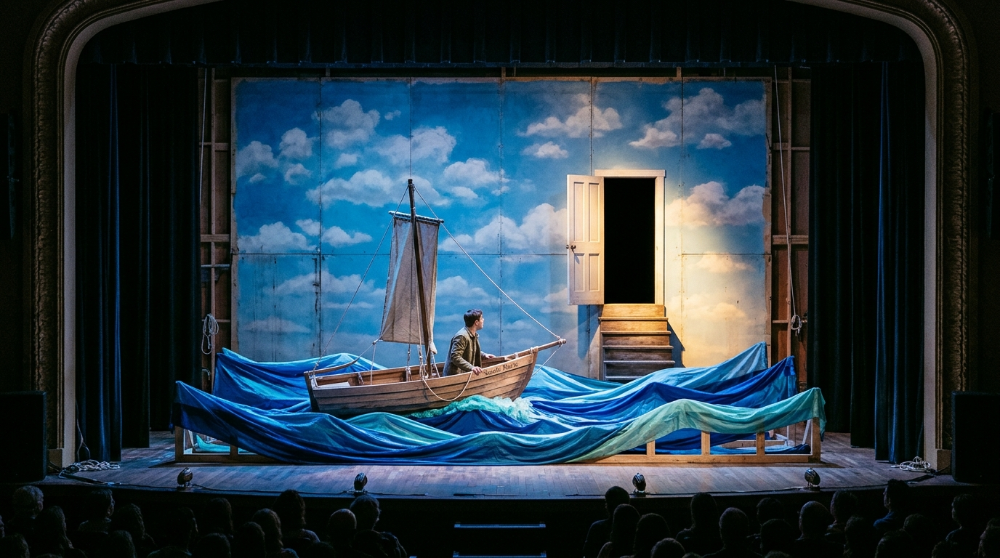
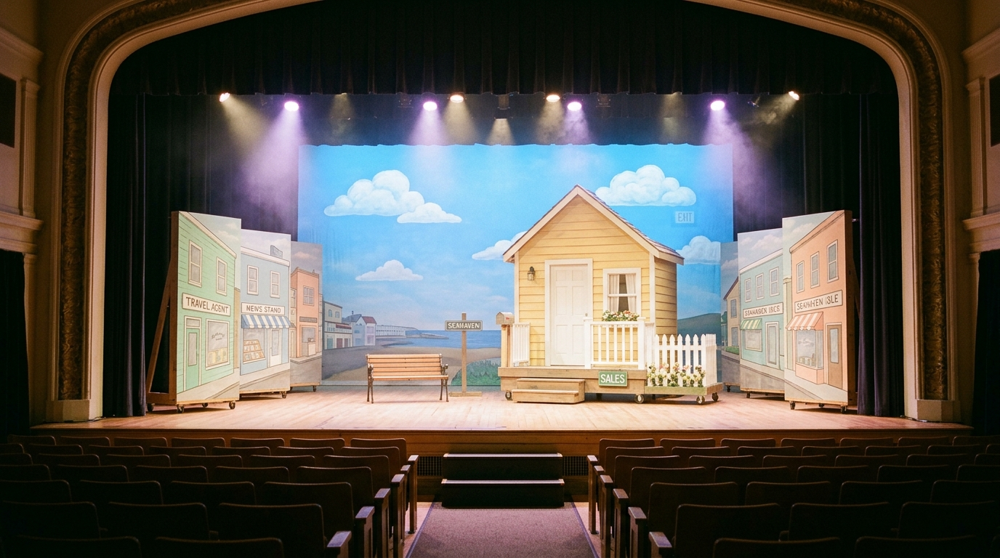
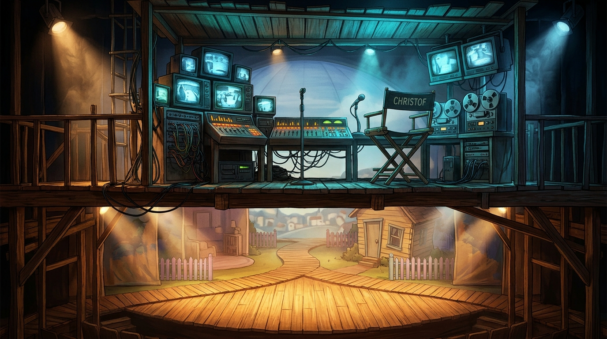

מפת הבמה המרחבית והצבת התזמורת
תרשים אינטראקטיבי המבוסס בדיוק על הסקיצה הידנית שלכם, המותאם לאילוצי החלל (מעברים צרים, קיר אחורי, מדרגות ושילוב הכלים).
ציור שמיים ועננים / דלת סודית לסצנת הסיום / מסך הקרנה
חדר שינה / רחוב סיהייבן / משרד / חוף ים / שיט בסירה
מתחם התזמורת החיה (פסנתר, גיטרות, תופים)
פתרון אקוסטי ומבנילמה דווקא באגף שמאל הקדמי?
- שמירה על זרימת שחקנים: המדרגות אל האולם נמצאות בימין. הצבת התזמורת בשמאל מאזנת את המשקל הויזואלי של הבמה ומאפשרת מעבר חופשי בימין.
- חיסכון קריטי במאחורי הקלעים: מאחורי הקלעים צפוף מאוד. אם נשים את התופים והפסנתר במאחורי הקלעים, נאבד את כל מעבר השחקנים. הצבתם בקדמת אגף שמאל (או על רצפת האולם הצמודה לשמאל הבמה) משחררת את כל מאחורי הקלעים!
- סאונד ותיאום: הנגנים רואים היטב את המתרחש על הבמה ויכולים להגיב מוזיקלית ברגע לקיוויים (למשל ברעמי הסערה, נפילת הפנס, ומוזיקת הפרודיה של כריסטוף).
השוואה: הסקיצה הידנית המקורית שלכם מול הדמיית הבמה הריקה

השרטוט מראה בבירור: במה מרכזית רחבה, קיר אחורי (מסומן באדום), מעברים צרים משני הצדדים למאחורי הקלעים, ומדרגות יורדות לאולם מימין.

במת עץ חמימה, קיר אחורי עם מסגרת עץ, מעברי קלעים עם וילונות טבעיים, מדרגות לימין, ומתחם תזמורת מואר באור חם בצד עם פסנתר, תופים וגיטרות.
גלריית הדמיות AI ותפיסה ויזואלית
תמונות קונספט שנוצרו במיוחד בהתאם למחזה ולרוח בית הספר האנתרופוסופי. לחצו על כל תמונה להגדלה מלאה ופרטי ביצוע.
1. הבמה הריקה ומתחם התזמורת
מבט מלא על הבמה הריקה לפי הסקיצה: במת עץ טבעית, מסגרת אחורית לקיר שמיים/ציור, מעברי קלעים בצדדים, מדרגות רחבות לקהל, ומתחם התזמורת האקוסטית.

שיא המחזה (סצנה 14)2. סצנת הבריחה וההתנגשות בקיר
הסירה "סנטה מריה" בתוך גלי בד כחולים מרהיבים, מתנגשת בקיר השמיים המצויר שמתגלה כקיר קשיח. מדרגות עץ מובילות לדלת יציאה לבנה קטנה הנפתחת אל החשיכה.

עיירת סיהייבן והבית3. העיירה סיהייבן והבית של טרומן
חזיתות בתים פסטליים מודולריות על גלגלים, גדר כלונסאות לבנה ודלת כניסה. אלמנט קל משקל ששני שחקנים יכולים לסובב בתוך שניות ולהפוך לרחוב או פנים הבית.

מרכז הבקרה / כריסטוף4. מרכז הבקרה של כריסטוף ("הירח")
גלריית עץ מוגבהת עם מסכי טלוויזיה וינטג' זוהרים וקונסולת סאונד. תאורה כחולה מנוכרת הממחישה את הפער בין עולם הריאליטי הקר לבין חייו של טרומן.
סצנוגרפיה מפורטת לפי סצנות המחזה
ניתוח מלא של 14 התמונות מתוך התסריט שהורדתם ("המופע של טרומן - עיבוד"), כולל תפאורה נדרשת, פתרון לבמה צפופה, וקיווים לתזמורת.
נאום כריסטוף, התעוררות טרומן ונפילת הפנס מהשמיים
🪑 אלמנטי תפאורה
- מיטת טרומן: מסגרת עץ צרה על גלגלים, מתגלגלת לבמה בסיום שיר הפתיחה.
- מסגרת מראה פתוחה: מסגרת עץ ללא מראה שטרומן עומד מאחוריה ומדבר ישירות לקהל!
- שלט "יום 10,909": שלט קרטון מתחלף שמוחזק ע"י עובד במה.
- פנס נופל מהשמיים: פנס קרטון/פלסטיק קל קשור לחוט דיג שיורד פתאום מהתקרה בקול נפץ.
🚪 פתרון לבמה ללא עומק
המיטה מתגלגלת החוצה דרך מעבר ימין תוך כדי שטרומן יוצא אל "הרחוב". הפיכת חזית הרחוב נעשית על ידי פתיחת כנף עץ ציר קטנה (Screen panel).
🎶 תפקיד התזמורת
פתיחה חגיגית: שיר "כל העולם במה" בליווי תזמורת מלא. ברגע נפילת הפנס: מכת מצילתיים פתאומית בתוף (Rimshot/Crash) ודממה מוחלטת!
משרד הביטוח ורציף המעבורת להארבור איילנד
🪑 אלמנטי תפאורה
- שולחן משרדי מתקפל: שולחן עץ קל, טלפון חוגה ישן, קלסרים וניירת ביטוח.
- שלט "מעבורת להארבור איילנד": שלט עץ נישא על מוט.
- מחסום המעבורת: חבל פשוט תלוי בין שני עמודים קלים.
- סירת המעבורת ברקע: חבל קשור לעמוד מזח עץ קטן.
🚪 פתרון לבמה ללא עומק
אין צורך במעבורת אמיתית! טרומן מגיע לקדמת הבמה, מביט אל האולם (שמייצג את המים הפתוחים) וקופא מאימה. האולם והמדרגות משמשים כאזור המים.
🎶 תפקיד התזמורת
צליל גיטרה אקוסטית קופצנית ושגרתית במשרד, המתחלפת בצלילי מים עמומים של פסנתר ומצילה עם קשת (Bowed cymbal) כשטרומן נזכר בטראומת המים.
הגשר הלא-גמור ושיחת הבירה הלילית עם מרלון
🪑 אלמנטי תפאורה
- קצה הגשר: מחסום פסיפס עץ צבוע צהוב-שחור או חבילת עץ שעליה יושבים.
- אביזרים: שישיית פחיות בירה, כדור גולף או מקל זריקה.
- תאורת ירח: ספוט בודד כחול/ירחי במרכז הבמה החשוכה.
🚪 פתרון לבמה ללא עומק
תפאורה אפסית! רק אלמנט ישיבה בודד ותאורת ספוט ממוקדת. כל הבמה שרויה באפלה, מה שמעלים לחלוטין את מאחורי הקלעים ויוצר תחושת אין-סוף מול הים.
🎶 תפקיד התזמורת
נעימת פסנתר עדינה ומלנכולית ("Father Kolbe's Preaching" או ליווי עדין של גיטרה קלאסית ופסנתר), הממחישה את הקשר המזויף/אמיתי בין מרלון לטרומן.
המפגש עם האב ההומלס והחטיפה באוטובוס
🪑 אלמנטי תפאורה
- דוכן עיתונים: קיוסק קל על גלגלים עם מגזינים.
- שלט תחנת אוטובוס: עמוד קל עם שלט תחנה.
- תנועת הניצבים: פועלי בניין עם שלדים, אצנים בבגדי ספורט, גברת עם כובע אדום.
🚪 פתרון לבמה ללא עומק
השימוש בניצבים בתנועה מעגלית יוצר את תחושת הרחוב ההומה מבלי להכניס חפצים כבדים. האוטובוס שחוטף את האב יכול להיות מיוצג ע"י קבוצת אנשים שמסתירה אותו וסוחבת אותו אל מעבר הקלעים.
🎶 תפקיד התזמורת
מוזיקת קצב מהירה ההופכת לכאוטית: ביט תופים שמתגבר ככל שטרומן מתקרב לאביו, ואז קטיעה פתאומית בשריקת שוטר.
פלאשבק: נשף התיכון והבריחה עם סילביה (לורן) לחוף
🪑 אלמנטי תפאורה
- כדור מראות / אורות נשף: תאורת מסיבה צבעונית המרצדת על הקיר האחורי.
- סוודר אדום: הסוודר האייקוני של סילביה וסיכת "איך זה ייגמר?".
- רצועת חול/בד חוף: בד בז' או תאורה זהובה על הרצפה.
- מכונית האב החוטף: שני פנסי רכב מסנוורים המוחזקים ע"י ניצבים ממעבר הקלעים יחד עם צפירת רכב רועמת!
🚪 פתרון לבמה ללא עומק
פנסי הרכב בידי שחקנים במקום רכב פיזי: פתרון תיאטרוני מושלם! שני שחקנים מחזיקים פנסים עוצמתיים אל מול הקהל והשחקנים, ומסנוורים את החלל ברגע החטיפה.
🎶 תפקיד התזמורת
שיר רוק/פופ איטי של שנות ה-80 בנשף (גיטרות ותופים), שעובר למנגינת אהבה נוגה ושברירית בפסנתר סולו כשהם על החוף.
בית החולים המזויף, סוכנות הנסיעות וחסימת הכור הגרעיני
🪑 אלמנטי תפאורה
- חדר ניתוח: פרגוד בד לבן נייד, שולחן עם "מנותח" מכוסה בסדין, שני רופאים במסיכות.
- סוכנות נסיעות: פוסטר ענק ומגוחך של "מטוס נפגע מברק" ואישה מבוהלת.
- מחסום הכור: שלט צהוב זוהר "סכנה - תחנת כוח סיהייבן", עשן תיאטרוני (מכונת עשן קטנה) ושחקנים בחליפות מיגון לבנות ומסכות גז.
🚪 פתרון לבמה ללא עומק
פרגוד הבד הלבן משמש גם לחדר הניתוח וגם כמסך הקרנה של צלליות. העשן של הכור הגרעיני ממלא את קדמת הבמה ויוצר בלבול ויזואלי שמסתיר את החלפת התפאורה הבאה!
🎶 תפקיד התזמורת
סירנות עולות ויורדות, ביט רוק מהיר ועצבני בתופים שמייצג את הנסיעה המטורפת של טרומן ומריל במכונית, ומקצב מתכת אזהרתי.
ההיעלמות, הסערה בים בסירה "סנטה מריה", וקיר השמיים
🪑 אלמנטי תפאורה
- חרטום סירת המפרש: מבנה עץ מעוקל (חצי סירה) על גלגלים עם תורן וחבלים, שטרומן עומד בו ומחזיק בהגה/חבל.
- גלי הים: 2-3 יריעות משי כחולות-טורקיז רחבות המונפות ע"י ניצבים בשני צדי הבמה בתנועה גלית חזקה.
- קיר השמיים והדלת: הקיר האחורי עם ציור עננים. בחלקו הימני ישנה דלת עץ לבנה שנפתחת החוצה, ומדרגות עץ פשוטות העולות אליה!
🚪 פתרון לבמה ללא עומק
הסירה נכנסת ממעבר ימין ישירות למרכז הבמה. גלי הבד מופעלים מהקלעים. כשטרומן "מתנגש" בקיר, חרטום הסירה פוגע בקיר השמיים האחורי בצליל חבטה. טרומן יורד מהסירה, הולך לאורך הקיר, עולה במדרגות ויוצא דרך הדלת!
🎶 תפקיד התזמורת
השיא המוזיקלי של ההצגה: התופים בשיא העוצמה עם רעמים, גיטרות חשמליות/אקוסטיות בסערה דרמטית. כשטרומן שר "What shall we do with a drunken sailor" התזמורת מצטרפת אליו. לאחר ההתנגשות בקיר – שקט מופתי, ורק צליל נשימה ופסנתר מרגש בנאום הפרידה ("אם לא אראה אתכם - בוקר טוב, צהריים טובים ולילה טוב!").
מדריך פתרונות גאוניים לבמה ללא עומק מאחורי הקלעים
איך מפיקים מופע מורכב כמו "המופע של טרומן" כשיש מעברים צרים בלבד ואפס שטח אחסון מאחורי הקלעים? עקרונות עיצוב מעשיים.
1. שיטת הפריאקטי (Periaktoi) המסתובב
במקום להכניס ולהוציא קירות שלמים, בונים 2-3 עמודים משולשים על גלגלי סיליקון שקטים שעומדים בצדי הבמה. כל סיבוב של 120 מעלות מחליף סצנה שלמה ברגע:
2. הקוביות הרב-תכליתיות של י״ב
בונים 4 קוביות עץ סנדוויץ' חזקות (מידות בערך 50x50x80 ס"מ) צבועות בגוון עץ טבעי חם. הקוביות הללו משמשות כמעט לכל דבר בהצגה:
- בחדר השינה: בסיס למיטה של טרומן
- במשרד: שולחן עבודה וכיסא למחשב/טלפון
- במזח עם מרלון: מקום ישיבה לשתיית בירה
- בסצנת הרכב: מושבי המכונית של טרומן ומריל
- בסוף: המדרגות אל דלת היציאה בקיר השמיים!
3. גלי ים מטקסטיל חי (בדי משי/אורגנזה)
במקום לבנות גלים קשיחים מדיקט שתופסים המון מקום בקלעים וקשה להזיזם, משתמשים בשתי יריעות בד משי כחול וטורקיז באורך 5-6 מטר. שחקנים או נגנים עומדים בקצוות ומניפים את הבד בקצב:
- בשיט רגוע: תנועה גלית חלקה עם תאורה כחולה עדינה
- בסערה: גלים ענקיים שמתנשאים מעל הסירה, מוארים בהבזקי ספוט (ברקים)
- בסיום: הבד נאסף בשנייה אחת אל תוך ארגז קטן בצד הבמה!
4. מסגרת המראה הפתוחה (טכניקת ברכט/אנתרופוסופיה)
טרומן מתחיל את יומו בצחצוח שיניים ודיבור מול ה"מראה". במקום לשים מראה שתשקף את הקהל או את התאורה, בונים מסגרת עץ מרובעת פתוחה על רגליים דקות:
- טרומן עומד מאחורי המסגרת ומביט ישר דרכה אל הקהל.
- הקהל הוא המראה של טרומן, וטרומן הוא המראה של החברה!
- המסגרת דקה וקלה לאחסון צמוד לקיר מאחורי הקלעים בעובי של 5 ס"מ בלבד.
צ'ק-ליסט רקוויזיטים ומשימות לצוות תפאורה
רשימת האביזרים והמטלות שחולצו ישירות מתוך התסריט שלכם (עמ' 40-44). ניתן לסמן משימות כהושלמו, לעקוב אחר סטטוס ולהוסיף הערות.
| V | אביזר / אלמנט תפאורה | תמונה / סצנה במחזה | חומרים ודגשים לבנייה | סטטוס |
|---|